中村研ニュース（2008年度）
応用物理学関係連合講演会で共同研究者が登壇［2009年3月］
3月30日（月）から4月2日（木）まで，第56回応用物理学関係連合講演会が筑波大学筑波キャンパスで開催され，30日に中村研と共同研究を進めている理化学研究所の平賀純子氏が登壇しました。 講演のタイトルは「X線光子によりCCDの内部で形成される電荷雲形状の実測」で，本研究室が理化学研究所の平賀純子博士等と共同で研究を進めているBP-1ガラス製の超微細Ｘ線コリメータを用いた硬Ｘ線CCDの電荷雲形状の測定結果について発表しました。日本物理学会年次大会で院生と中村が登壇［2009年3月］
3月27日（金）から30日（月）まで，日本物理学会第64回年次大会が立教大学，立教池袋中学・高校で開催され，28日に中村研の博士課程（前期）２年の宮本健司が，また，30日に博士課程（前期）１年の藤井景子と中村が登壇しました。 講演のタイトルはそれぞれ，「硬Ｘ線用CCDの内部で形成される電荷雲形状の測定」（宮本），「XMASS実験86：ICP-MSを用いたU/Th含有量の少ない検出器金属素材の選定」（藤井），「液体キセノンの発光スペクトルの測定-２」（中村）で，本研究室が理化学研究所の平賀純子博士や東京大学宇宙線研究所や高エネルギー加速器研究機構と進めている様々な共同研究の現状について発表しました。第24回固体飛跡検出器研究会で学部４年の片倉が登壇［2009年3月］
学部４年の片倉勇人が，3月27日（土）に早稲田大学で開かれた第24回固体飛跡検出器研究会で登壇しました。発表のタイトルは「広領域画像高速取得顕微鏡で撮像された画像の精度の評価」で，高速動作で知られる顕微鏡により得られた画像の歪みの評価について発表しました。修士生２名と学部生５人が無事に修了・卒業［2009年3月］
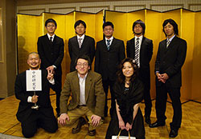3月26日（木）に修了式・卒業式が行なわれ，中村研も修士生２名と学部生５人が無事に修了・卒業しました。修了・卒業したメンバーは次の通りで，それぞれ，就職もしくは進学をします。- 修士修了
- 佐藤 友厚，宮本 健司
- 学部卒業
- 片倉 勇人，片田 夕貴，河野 秀紀，宗田 天志，鳥越 唯
なお，３年前の萩原 宙樹に引き続き，宗田 天志が成績優秀により同窓会から表彰されました。
新型コリメータの発明が大学に承継［2009年3月］
3月23日（月）に，Ｘ線用の微細コリメータの製法に関する発明が大学に承継されました。これから出願手続きに入ります。新型コリメータの製法を届け出［2009年3月］
3月5日（木）に，Ｘ線用の微細コリメータの製法に関する発明の届を大学に提出しました。院生・学部生がスキー旅行に［2009年2月］
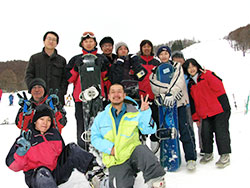院生・学部生が2月20日（金）から23日（月）まで菅平にスキー旅行に行きました。直前に降雪にも恵まれ，皆，スキーやスノーボードを堪能しました。学部４年の５人の学部生が卒論発表会で発表［2009年2月］
2月19日（木）に工学部知能物理工学科の卒論発表会が開かれ，中村研の５人の学部４年生が発表を行ないました。発表のタイトルは次の通りです。
◎片倉 勇人：「広領域画像高速取得顕微鏡を用いたX線写真フィルム画像の解析」◎片田 夕貴：（現時点では非公開）
◎河野 秀紀：「X線CCD実験のための硬X線用シャッターの研究」
◎宗田 天志：「NaI(Tl)シンチレータの蛍光減衰時間の測定」
◎鳥越 唯：「コンプトン散乱計を用いた硬X線の偏光度の測定」
M２の２人の院生が修論発表会で発表［2009年2月］
2月12日（木）に工学府物理情報工学専攻物理工学コースの修論発表会が開かれ，中村研の博士課程前期２年の２人の院生が無事に発表を行ないました。発表のタイトルは次の通りです。
◎佐藤 友厚：「同時計数法によるシンチレーション光のスペクトル測定」◎宮本 健司：「硬X線用CCDの内部で形成される電荷雲形状の測定」
「放射線検出器とその応用」研究会で講演［2009年1月］
1月27日（火）〜29日（木）に第23回「放射線検出器とその応用」研究会（高エネルギー加速器研究機構放射線科学センターと応用物理学会・放射線分科会との共催）が高エネルギー加速器研究機構（つくば）で開催され，28日（水）に中村が講演を行ないました。講演のタイトルは「液体キセノンの発光スペクトルの研究」で，本研究室においてＭ２の佐藤が中心となり東京大学宇宙線研究所と高エネルギー加速器研究機構から一部支援を受けて地道に研究を進めている液体キセノンの発光スペクトルの測定実験の概要と進捗状況について発表しました。講演の後，話を聞いて下さった複数の方から，面白かった，大学らしい研究で良い等，数々の好評を頂き，心強く，また有難く思いました。
これまで，多くの苦労を積み重ねて準備研究を進めてきましたが，液体キセノンを用いた実験の準備がほぼ整いました。
次年度の新卒研生として４人が仮配属［2009年1月］
1月22日，中村研の平成21年度の新卒研生として4人が仮配属されました。新型コリメータを改良［2009年1月］
Ｘ線に使用可能な新型の微細コリメータの穴径を約50μmφまで細くすることが出来るようになりました！宇宙科学シンポジウムでＭ２の宮本が発表［2009年1月］
1月6日（火）・7日（水）に宇宙航空研究開発機構で第９回宇宙科学シンポジウムが開かれ，7日の午後には博士課程前期２年の宮本が「硬Ｘ線用CCD内部で形成される電荷雲形状の測定実験２」というタイトルでポスター発表しました。新型コリメータの試作に成功！［2009年1月］
1月6日（火）に，前例の無い100keVまでのＸ線に使用可能な新型の微細コリメータ（〜150μmφ）の試作に成功した模様です。さらに，より微細なコリメータの試作にチャレンジする予定です。この研究の詳細はまだ明らかに出来ませんが，なるべく早い時期に公開したいと思います。中村宅で中村研の忘年会［2008年12月］
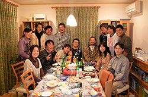12月27日（土）に，中村の新宅で中村研の忘年会を開きました。在籍する学部生と院生のメンバーに加え，４人のＯＢや共同研究者も集って賑やかに時間を過ごしました。卒研配属を考えている学部３年生の方へ［2008年12月］
卒研配属を考えている学部３年生向けのメッセージを載せています。>> メッセージのページ
なお，研究テーマに関する掲載情報が少し古いので，Ｘ線CCDに関する内容などを近々新たに掲載する予定です。（今月，つくばの 高エネルギー加速器研究機構で新しいデータを取得しましたので，結果が出次第，速報したいと思います。）
高エネルギー加速器研究機構の放射光施設でX線CCDの実験［2008年12月］
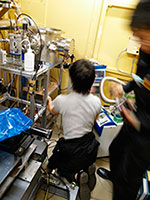12月16日（火）〜21日（日）に，つくばの高エネルギー加速器研究機構の放射光施設で，偏光した硬X線によるX線CCD素子内の電荷雲形状を測定する実験を行ないました。これは，我々が発明した超微細コリメータ（我々しか持っていない）でのみ可能な実験で，じゅうぶんとは言えないまでも，かなりのデータを無事に取得出来ましたので，詳細な解析の結果を非常に楽しみにしています。
結果は，宮本健司（M2）の修士論文や４年生の卒論にしたいと考えています。
東京大学宇宙線研究所 共同利用研究成果発表会で講演［2008年12月］
12月19日（金），20日（土）に，東京大学宇宙線研究所の共同利用研究成果発表会が東京大学宇宙線研究所（柏キャンパス）で開催され， 中村も成果の発表を依頼されて20日（土）の午後に講演を行ないました。講演のタイトルは「液体キセノンの発光スペクトルの研究」でした。 昨年は中村が本学の学内委員の任務が異常に忙しく体調を崩していたため，今年は前年度からの２年分の成果について報告を行ないました。 内容は，昨年度の萩原宙樹（M2）の仕事，今年度の佐藤友厚（M2），宗田天志（B4）の仕事が中心となっています。中村研ＯＢの鎌田真太郎氏がご結婚［2008年11月］
11月23日（日，祝）に，中村研OBの鎌田真太郎氏の結婚式がみなとみらいで行われ，多くの中村研卒業生が集まってお祝いしました。OGが来訪［2008年11月］
11月15日（土）のホームカミングデーに，中村研OGの伊藤利恵氏（小学校教員），中川智恵氏（ソフトウェア会社勤務）が来訪されました。知物ソフトボール大会で予選敗退［2008年10月］
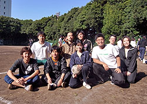10月30日（木）に行われた2008年秋季知物ソフトボール大会において，中村研チームは残念ながら予選リーグで敗退しました。XMASS実験の新Webサイトが公開［2008年10月］
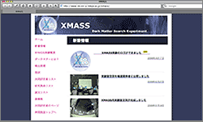10月7日（火）に，XMASS実験の新しいWebサイトが公開されました。 http://www-sk.icrr.u-tokyo.ac.jp/xmass/日本天文学会秋季年会で共同研究者の平賀純子氏が発表［2008年9月］
9月11日（木）から13日（土）まで，日本天文学会2008年秋季年会が岡山理科大学で開催され，12日に，共同研究者である理化学研究所基礎科学特別研究員の平賀純子氏が発表しました。 発表のタイトルは，「BP-1ガラス製マルチコリメータを用いたX線CCDの電荷雲形状の実測II」でした。液体キセノンの循環実験を開始［2008年9月］
神岡鉱山において，博士課程前期２年の佐藤友厚と同１年の藤井景子が，XMASSの液体キセノンの循環実験のシフトに参加して頑張っています。［写真：神岡坑内で］
応用物理学会秋季学術講演会で博士課程（前期）２年の宮本が登壇［2008年9月］
9月2日（火）から5日（金）まで，応用物理学会2008年秋季第69回学術講演会が中部大学で開催され，3日に中村研の博士課程（前期）２年の宮本健司が登壇しました。 講演のタイトルは，「硬X線用CCDの内部で形成される電荷雲形状の測定」で，本研究室が理化学研究所の平賀純子博士等と共同で研究を進めているBP-1ガラス製の超微細Ｘ線コリメータを用いたＸ線CCDの電荷雲の測定実験について発表しました。大学院工学府博士課程（前期）の一般選抜で合格者［2008年9月］
平成21年度横浜国立大学大学院工学府博士課程（前期）の一般選抜において，本研究室を志望する受験生が合格しました。ニュースでXMASS実験のための空洞が紹介されました［2008年8月］
8月27日に，XMASS実験を行うための神岡鉱山内の新しい空洞が報道関係に公開され，様々なニュースで紹介されました。NHK： http://www3.nhk.or.jp/news/k10013745621000.html#（←リンク終了）
朝日新聞： http://www.asahi.com/science/update/0827/NGY200808270008.html
毎日新聞： http://mainichi.jp/select/science/news/20080828k0000m040156000c.html
液体キセノンの容器の低放射能素材の研究を開始［2008年7月］
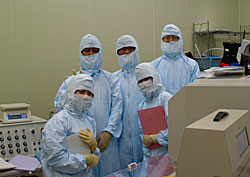 XMASS実験で必須となる，液体キセノンを貯める容器の低放射能素材の研究を，本研究室ではM1の藤井景子を中心に４年生が協力して東大グループと共に開始しています。［写真：神岡坑内のICP-MS分析装置の前で］大学院工学府博士課程（前期）の特別選抜で３名合格［2008年7月］
平成21年度横浜国立大学大学院工学府博士課程（前期）の特別選抜において，本研究室を志望する受験生が３名合格しました。【おくやみ】戸塚洋二先生ご逝去［2008年7月］
7月10日（木）未明に，東京大学特別栄誉教授の戸塚洋二先生が６６歳でご逝去されました。戸塚先生は，ドイツでの電子陽電子衝突実験や，神岡の水チェレンコフ実験（カミオカンデ，スーパーカミオカンデ）を牽引してこられ，スーパーカミオカンデではニュートリノ振動を確定し質量が有限であることを示されるなど，宇宙素粒子物理学の分野で歴史的な成果を残されました。中村も，院生の時から長きにわたって度々ご指導と叱咤激励を頂きました。竹を割ったような性格，スポーツマンシップ，と自評され，厳しいながらも学生に対する思いやりも人一倍お持ちで，僕が今までで最も感謝している先生でもありました。ノーベル賞の最有力候補の１人でありながら受賞されることなくお亡くなりになられたことは残念でなりません。せめて，これまでに賜った薫陶を大事に受け継いで，戸塚先生のご恩に報いていきたいと思います。戸塚先生，どうも有難うございました。そしてゆっくりとおやすみ下さい．．．先端加速器科学技術推進協議会に出席［2008年6月］
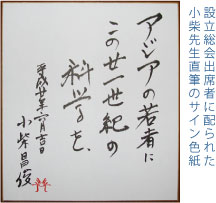6月11日（水）に，霞が関の霞山会館で先端加速器科学技術推進協議会の設立総会が開かれ，本学の高エネルギー物理学研究グループ（佐々木賢，中村正吾）も特別会員となり，中村が出席しました。設立総会では，小柴昌俊東京大学特別栄誉教授，自由民主党衆議院議員与謝野馨元内閣官房長官も来賓として出席され，祝辞を述べられました。
MAXI計画の国際会議開催［2008年6月］
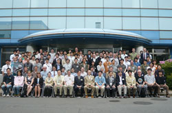6月10日（火）〜12日（木）に，国際宇宙ステーションのMAXI計画の国際会議が，埼玉県和光市にある理化学研究所で開かれました。
次世代のＸ線天文観測用CCDの研究を理化学研究所で共同で進めているM2の宮本健司も，３日間，お手伝いをしました。
我々も，出来ればMAXIにも貢献したいと考えています。
JAXA MAXI http://www-maxi.tksc.jaxa.jp/高エネ機構で院生と４年生が夏期実習に参加［2008年6月］
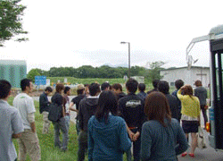6月2日（月）〜4日（水）に，つくば市の高エネルギー加速器研究機構で毎年恒例となった夏期実習が行われ，中村研の学生も院生１名と４年生４名が参加しました。それぞれのテーマに参加し，充実した時間を過ごしました。
新入生歓迎会が行なわれました［2008年5月］
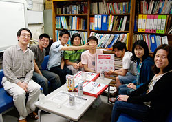5月26日（月）に，研究室で新入生歓迎会を行ないました。
それぞれ，自己紹介をして大いに盛り上がり，楽しいひとときを過ごしました。
OBの尾崎雄一氏が来訪［2008年5月］
5月13日（火）に中村研OBの尾崎雄一氏（現・コニカミノルタオプト）が就職説明会のために来訪しました。新しいメンバーを迎えました［2008年4月］
2008年度がスタートし，新しい院生と新４年生が研究室に入ってきました。新しいメンバーは次の通りです。- 藤井 景子（M1）
- 片田 夕貴（B4）
- 河野 秀紀（B4）
- 宗田 天志（B4）
- 鳥越 唯（B4）